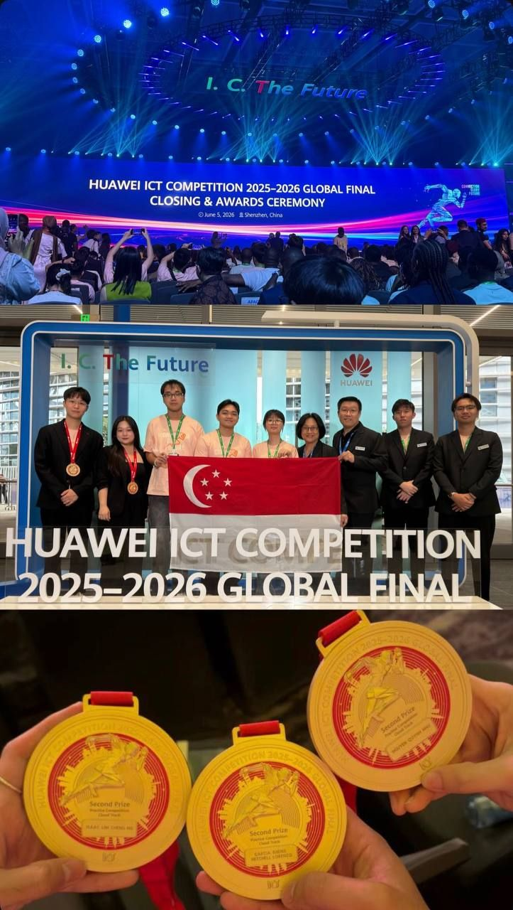
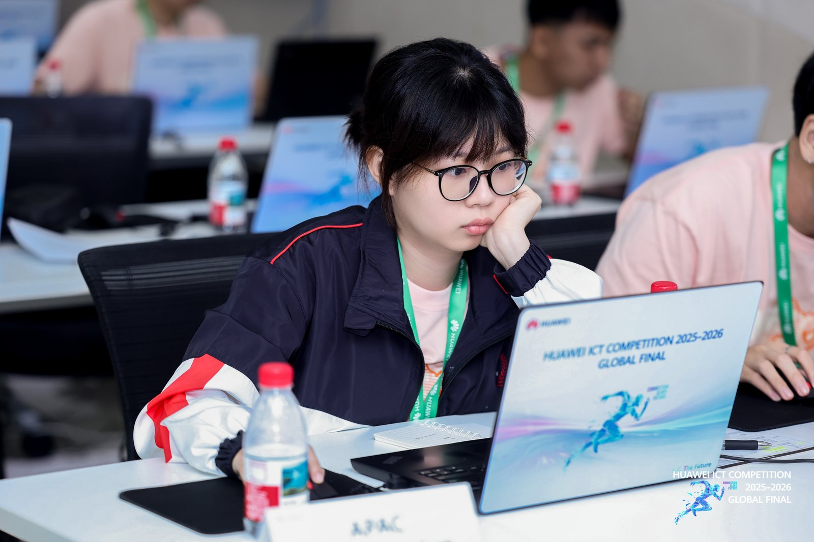
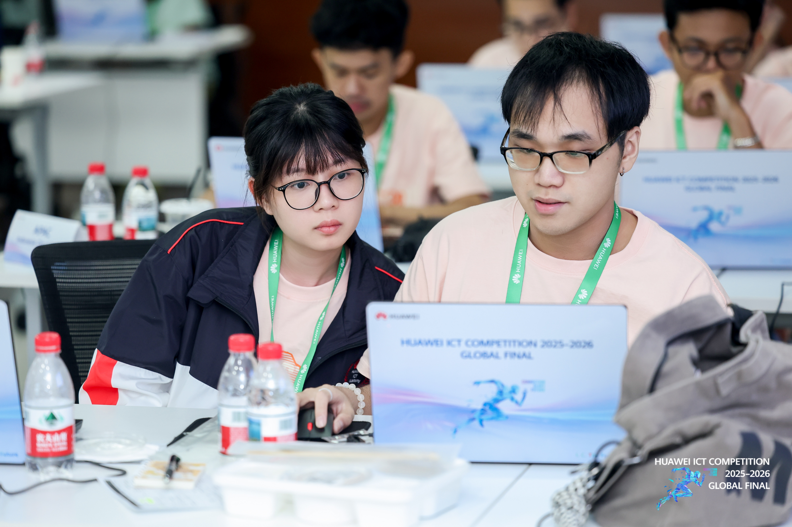
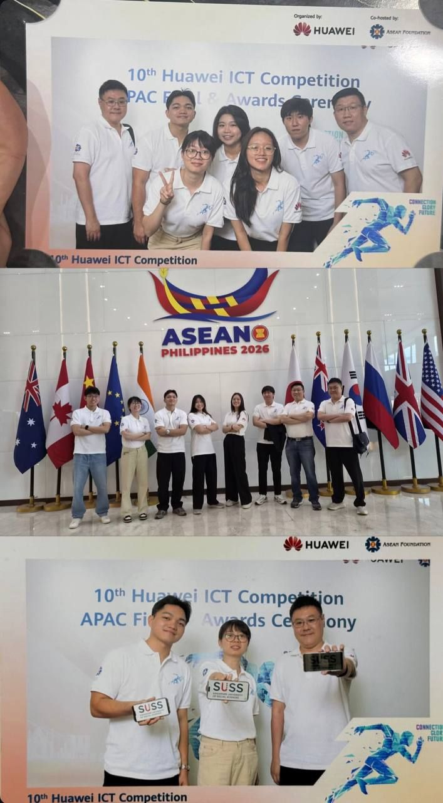
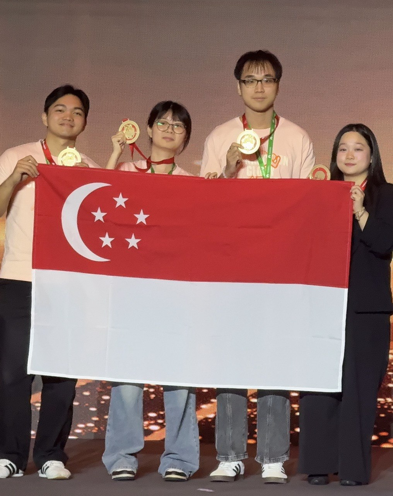

Team achievement · Cloud Track · June 2026
Second Prize at the Huawei ICT Competition Global Final
A ten-month journey from Singapore to the global stage in Shenzhen, China.
The journey
From national finals to the global stage
I am incredibly proud that our team earned Second Prize at the Huawei ICT Competition 2025–2026 Global Final in Shenzhen, China. What a journey it has been, from September 2025 to June 2026. Across ten months, we progressed from the National Finals in Singapore, through the APAC regionals in Jakarta, and finally to the global stage at Huawei’s headquarters.
Representing Singapore and SUSS alongside brilliant competitors from NYP and NUS was an honor. Meeting and connecting with technology talents from around the world made the experience eye-opening, and one I will always treasure. Thank you, Huawei, for creating a platform that brought us together. I’m ready for the next chapter.
My contribution
Cloud architecture under pressure
As part of our Cloud Track team, I helped architect a high-availability, multi-region cloud topology with automated failover and AI performance monitoring. We brought the design together under high-pressure simulation constraints, relying on careful coordination and clear decisions across the team.






Deepest thanks
Great teammates make the journey
Isaac Lim and Andre Garcia — the best Cloud Track teammates I could have asked for. Thank you for your dedication and seamless teamwork.
Cadence Chua — thank you for being so supportive and taking such good care of us during our trip in China. Truly the best talent acquisition professional ever!